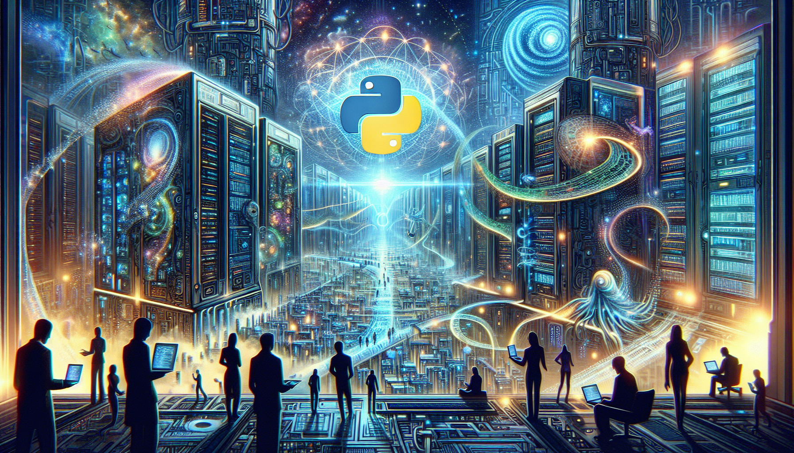

Python and the Future of AI
Python has been gaining popularity over the years, and for good reason. Its user-friendly syntax and extensive libraries make it a top choice for many developers, including those working on AI and machine learning projects. With its ease of use and powerful capabilities, Python is paving the way for the future of AI.
One of the main advantages of using Python for AI is its flexibility. It allows developers to quickly prototype and test their ideas, making the development process faster and more efficient. Additionally, Python's large and active community constantly contributes to its libraries, making it easier to implement complex algorithms and techniques for AI and machine learning. As AI continues to advance and become more integrated into our daily lives, Python will likely remain a key tool for its development and implementation. With its simplicity, versatility, and growing capabilities, Python is sure to play a major role in shaping the future of AI.